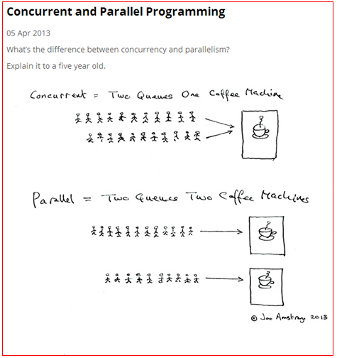

本博客系列是学习并发编程过程中的记录总结。由于文章比较多，写的时间也比较散，所以我整理了个目录贴（传送门），方便查阅。
在真正开始聊本文的主题之前，我们先来回顾下两个老生常谈的概念：并发和并行。
下面贴上一张图来解释下这两个概念：

上图中的咖啡就可以看成是CPU，上面的只有一个咖啡机，相当于只有一个CPU。想喝咖啡的人只有等前面的人制作完咖啡才能制作自己的开发，也就是同一时间只能有一个人在制作咖啡，这是一种并发模式。下面的图中有两个咖啡机，相当于有两个CPU，同一时刻可以有两个人同时制作咖啡，是一种并行模式。
我们发现并行编程中，很重要的一个特点是系统具有多核CPU。要是系统是单核的，也就谈不上什么并行编程了。那么是什么原因导致了现代CPU架构都是多核架构？如果CPU架构都是单核的架构我们是不是就能不要研究什么并行编程了？
上面章节中留下了一个问题：为什么现代CPU都是多核架构。为了回答这个问题，我们先来了解一个定律--摩尔定律。
1965年，英特尔联合创始人戈登·摩尔提出以自己名字命名的「摩尔定律」，意指集成电路上可容纳的元器件的数量每隔 18 至 24 个月就会增加一倍，性能也将提升一倍。
根据摩尔定律，CPU的性能每隔18到24个月就能增长一倍。但是从现在的情况来看，单核CPU的主频已经逼近了极限，以现在的制造工艺，很难再继续提升单核CPU的主频。也就是说摩尔定律已经失效。
虽然摩尔定律失效了，但是科技的进度对CPU性能的需求没有停止。这个也难不倒我们伟大的硬件工程师。一个CPU的性能提升有限，我将两个CPU拼在一起性能不就提升一倍了么。于是多核CPU的架构就出现了。
提高CPU工作主频主要受到生产工艺的限制。由于CPU是在半导体硅片上制造的，在硅片上的元件之间需要导线进行联接，由于在高频状态下要求导线越细越短越好，这样才能减小导线分布电容等杂散干扰以保证CPU运算正确。因此制造工艺的限制，是CPU主频发展的最大障碍之一。
为了继续保持性能的高速发展，硬件工程师破天荒地想出了将多个CPU内核塞进一个CPU里的奇妙想法。由此，并行计算就被非常自然地推广开来，随之而来的问题也层出不穷，程序员的黑暗时期也随之到来。简化的硬件设计方案必然带来软件设计的复杂性。换句话说，软件工程师正在为硬件工程师无法完成的工作负责，他们将摩尔定律失效的责任推给了软件开发者。
所以，如何让多个CPU有效并且正确地工作也就成了一门技术，甚至是很大的学问。比如，多线程间如何保证线程安全，如何正确理解线程间的无序性、可见性，如何尽可能地设计并行程序，如何将串行程序改造为并行程序。而对并行计算的研究，也就是希望给这片黑暗带来光明。
世界就是这样一个矛盾体，并发编程能让我们充分地利用CPU资源，提升系统性能。但是同时也给我们带来了很多问题，比如线程上下文切换对性能消耗的问题、共享变量的线程安全问题、线程死锁问题和线程间通信等问题。研究并行编程就是研究怎么在享受多线程编程给我们带来便利的同时又能规避多线程带来的坑。作为一个Java后端开发程序员，我们更应该掌握好多线程编程，因为服务器端对性能的追求是非常高的。